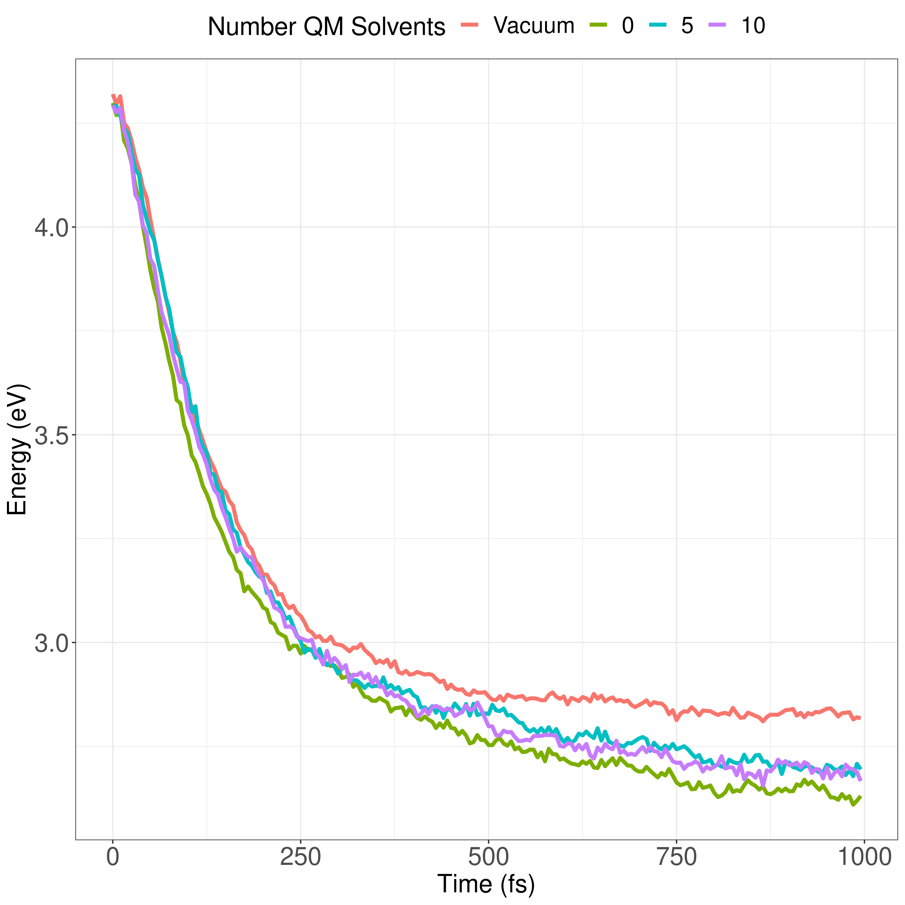

Paper 2
Table of Contents
Introduction
During ultra-fast photovolatic processes, the Born-Openheimer
appoximation breaks, and accounting for non-adiabatic behavior become
necessary. These situations occur frequently within processes of
interest to photochemistry and photophysics. For example, the
excitation to a non-equlibrium state followed by a relaxation through
internal conversion is a process common to processes such as
photosynthesis, solar-cell photo-absoprtion, optical detectors, and
the excitation of the visual nerve. Multiple methods to have been
proposed and used to simulate these non-adiabatic processes. These
methods include treating the nuclear coordinates quantum mechanically
or simiclassically, or by using a hybrid quantum mechanical, classical
treatment to account for the non-adiabaticity. One of the more
popular version of the latter, and the one which we use in this work,
is Molecular Dynamics with Quantum Transitions (MDQT), were the system
propogates classically along adiabatic potential energy surfaces, but
a quantum evalutation is made at each time step to determine whether
to transition to another state.
For many areas in which nonadiabatic dynamics simulations would be of
interest, solvents play a crucial role. In situations where ultrafast
electronic relaxations occur, the electronic decay is often faster
than the time for the solvent to equilibrate. As such, Implicit
solvents, which adjusts instantaneously to any changes, become
imprecise approximation However performing non-adiabatic dynamics on
such large systems is far too computationally expensive. To ease the
computational cost we can employ QM/MM methodologies to perform the
non-adiabatic calculation only on the areas of interest. Similar
methods have been employed in the study of retinal photochemistry and
organic semiconductors. In this work we implement a new method of
performing non-adiabatic QM/MM using the SANDER package AMBERTOOLS
combined with the high performance Non-Adiabatic simulator NEXMD. We
further analyze the effects of including near solvent molecules within
the QM region.
NEXMD, currently being developed by the Tretiak lab in los Alamos, has
a proven track record of performance on the stimulation of ultra-fast
non-adiabatic behaviors. It’s ability to solve state coupling
equations on-the-fly has found great utility for systems with hundreds
of atoms. Numerous studies have implemented the method for research
into topics including the study of chlorophyll organic conjugated
molecules, and pi conjugated macrocycles. Such studies with NEXMD
have been limited to implicit solvents. No method to provide NEXMD
with QM/MM capabilities have yet to be implemented.
Amber is primarily known as a classical force-field molecular dynamics
package. It’s a massive project maintained by people across the globe
that's been designed to work with very large systems ranging in the
tens of thousands of atoms. Amber is capable of a huge range of
simulations from replica exchange to QM/MM umbrella sampling using
nudge elastic bands. Most importantly for this research, it has a
proven track record of doing QM/MM solvent-solute simulations using
periodic boundary conditions.
This work is split in the four main sections. In section 1 we discuss
the theoretical methodology behind the computational implementation.
Next , in secton 2, we discuss how we interface NEXMD with AMBER
covering what data was shared, and which package performed which
calculation. In section 3 we introduce our test system and the
simulation protocol used, from which we analyze the results in
section 4. Our analysis looks into the effects of using QM/MM on
state population decay, potential energy decay, bond length
adjustements, dihedral angles, and Widberg Bond orders.
Theoretical Methodology
Adiatic motion is managed by SANDER using the NEXMD software package to calculate the semiemprical QM energies and forces. NEXMD uses a modified version of the SQM package from AMBERTOOlS for these calcuations which SANDER links to by default. As such, the ground state energies and forces from SANDER paired with NEXMD vs SANDER in its default configuration are identical. This modified version howerver also provides the excited state energies and forces. Previous work have shown methods for linking these two packages to provide excited state adiabatic QM/MM simulations . Personal Citation.
To find the excited state energies during dynamics, NEXMD employs the collective electronic oscillator (CEO) method developed by Mec… etc. This method is similar to the random phase approximation and is compatible with Kohn-Sham DFT or Hartee-Fock.
A quick overview of this methodology is as follows. We start with the Liouville eigenvalue equation.
\begin{align*} \hat{\mathbf{\mathcal{L}}}\mathbf{\rho}_{0\alpha} = \Omega\mathbf{\rho}_{0\alpha} \end{align*}with \(\mathbf{\mathcal{L}}\) being the two-particle Louiville operator and \(\Omega\) the energy difference between the \(\alpha\) state and the ground state. \(\rho_{0\alpha}\) is the single- electron density matrix
\begin{align*} (\mathbf{\rho}_{0\alpha})_{nm} = \left< \psi_{\alpha} \right| c_m^\dagger c_n \left| \psi_0 \right>. \end{align*}where \(\psi_{g}\) and \(\psi_{\alpha}\) are the single-electron wavefunctions for the groundstate and singly excited state \(\alpha\), and \(c_m^\dagger\) and \(c_n\) are the creation and annihilation operator respectively. The coefficients for the atomic orbital basit sets are derived prior using the QM/MM methodology from the SQM package.\cite{walker2008implementation} The Liouville operator can be found analytically using
\begin{align*} \hat{\mathbf{\mathcal{L}}}\mathbf{\rho}_{0\alpha} = \left[ \mathbf{F}^{\vec{R}}(\mathbf{\rho}_{00}), \mathbf{\rho}_{0\alpha} \right] + \left[ \mathbf{V}^{\vec{R}}(\mathbf{\rho}_{0\alpha}), \mathbf{\rho}_{00} \right] \end{align*}where \(\textbf{F}^{\vec{R}}\) is the Fock operator and \(\textbf{V}^{\vec{R}}\) is the column interchange operator.
The forces are also calculated analytically using the gradient of the ground state energy and the excited state energy.
\begin{align*} \vec{\nabla} E_{\alpha} = \vec{\nabla} E_0 + \vec{\nabla} \Omega_{\alpha} \end{align*}With the gradient of the ground state being calculated by
\begin{align*} \vec{\nabla} E_0 = \frac{1}{2}\mathbf{Tr} \left[ \left( \mathbf{t}^{\vec{R}} + \mathbf{F}^{\vec{R}} \right) \mathbf{\rho}_{00} \right] \end{align*}where \(\textbf{t}\) is the single-electron kinetic operator.
The gradient of the excited state can derived using
\begin{align*} \vec{\nabla}\Omega_{\alpha} = \mathbf{Tr} \left[ \mathbf{F}^{\vec{R}} (\mathbf{\rho}_{\alpha\alpha} - \mathbf{\rho}_{00})\right] + \mathbf{Tr} \left[\mathbf{V}^{\vec{R}}\mathbf{\rho}_{0\alpha}^\dagger \mathbf{\rho}_{0\alpha} \right] \end{align*}where \(\mathbf{\rho}_{ij}\) represents the density or transition density matrix for states i and j, \( \mathbf{F} \) is the Fock matrix and \( \mathbf{V} \) is the column interchange operator.
The MDQT approach utilized in this work as a modified version of the Tully Surface Hopping method. Here the quantum wave function is approximated using a swarm of independent trajectories. During time steps, these trajectories propagate along adiabatic surfaces; However, between time steps, these trajectories are allowed to transition from one state to another in a Monte Carlo like fashion. That number of trajectories in any given state corresponds to that state's quantum probability.
We define the Hamiltonian
where \(\mathbf{T}(\mathbf{R}) \) is the nuclear kinetic energy operator and \(\textbf{H}_{el}\) is the electronic Hamiltonian.
We expand the the total wavefunction, \(\Psi\) into the adiabatic state wavefunctions \(\phi\)
where \(\textbf{r}\) and \(\textbf{R}\) are the electronic and nuclear coordinates respectively.
The matrix elements of the electron Hamiltonian become
and the time-dependent Shrodinger equation can then be written as
The term \(\left< \phi_j | \dot{\phi}_k \right>\) represents the coupling between the jth and kth state and is most commonly referred to as the nonadiabatic coupling term.
At each step we perform a montecarlo like decision
\begin{equation} \label{eq:tullyjump2} \sum_{j=1}^{k-1}g_{ij} < \zeta \le \sum_{j=1}^{k}g_{ij} \end{equation}hopping from state i to k when
\begin{equation} \label{eq:tullyjump1} \zeta < g_{ik} \end{equation}where ζ is a uniformly distributed random number from 0 to 1, and
\begin{equation} g_{ik} = \frac{b_{ki}(t=0)\Delta t}{a_{ii}(t=0)} \end{equation}with
\begin{equation} \label{eq:tullyb2a} b_{kj} = \frac{2}{\hbar}\Im\left(a_{kj}^*V_{kj}\right) - 2\Re\left(a_{kj}^* \dot{\mathbf{R}} \cdot \mathbf{d}_{kj}\right). \end{equation}\(a_{kj}\) are the off diagonals of the density matrix \(a_{kj} = c_k^* c_j\) and \(\mathbf{d}_{kj}\) is the non-adiabatic coupling vector
\begin{equation} \label{eq:tullynacoupling} \mathbf{d}_{kj}\mathbf(R) = \left<\phi_{k}(\mathbf{r};\mathbf{R})\right|\mathbf{\nabla}_{\mathbf{R}}\left.\phi_j(\mathbf{r};\mathbf{R})\right>. \end{equation}We use the Collect Oscillator Approach to calculate the non-adiabatic coupling terms \(\mathbf{R} \cdot \mathbf{d}_{kj}\) ``on the fly''. tommasini2001electronic,tretiak1996collective,tretiak2009representation,chernyak2000density
Inconsistencies arise from solely using the Tully surface hopping approach. Trajectories transfer between the various adiabatic potential energy surfaces instantaneously based off the QM state coefficients. These coefficients are determined using the integral of the TDSE on multiple trajectories. Each trajectory if unmodified will keep in phase even after spatial separation. Furthermore, if dealing with a system with a dense electronic state structure, its likely that the ordering of these states will switch during general dynamics. We apply a dechohence correction as well as a trivial crossing accounting system as performed in previous research.
Computational Design

Figure 1: Swim-lane diagram describing the common timestep of the SANDER-NEXMD interface.
The swim-lane chart in figure scheme:nasqm describes a common time-step that occurs within the SANDER-NEXMD interface. First users initiate the program through SANDER, a program found in AMBERTOOLS. SANDER uses NEXMD to calculate the energies and forces of the QM atoms, check for trivial crossings, and propagate the quantum coefficients. With these results, SANDER performs the QM/MM procedures to derive the accelerations and velocities for the classical time step. NEXMD then decides whether to perform a state transitions, adjusting the velocities as needed. Finally SANDER propagates the nuclear coordinates and the cycle continues for the rest of the dynamics.
When users initiate SANDER, they're provide the usual SANDER inputs of a coordinate, parameter, and sander control files. In addition they will include a file specific to NEXMD which describes the QM and Non-adiabatic behavior.
This interface, incorporates SANDER's implementation of QM/MM as described in previous literature to generate a solvent inclusive ground state density matrix utilized by NEXMD's excited state calculations.
Sander controls the interactions between the QM and MM regions.
SANDER calls NEXMD providing the function calls with the QM coordinates, MM charges, and Langevin thermostat parameters. NEXMD calculates the energies of the QM atoms with electrostatic interactions from the MM point charges using CIS, TDHF, or TDDFT. A variety of Hamiltonians are available; however, AM1 has been shown to provide very reasonable computational cost to accuracy for our systems of interest.silva2010benchmark. An analysis of parameter choices can be found in previous literature.nelson2012nonadiabatic
After calculating energies, NEXMD performs a check for non-avoided trivial crossings. Computational feasibility of this step requires the calculations of the non-adiabatic coupling.nelson2020non We use an analytical form of the non-adiabatic coupling derived using the Hellman-Feynman theorem. tommasini2001electronic,chernyak2000density
\[ \mathbf{d}_{ab}(\mathbf{R}) = \frac{ \left< \Psi_a (\mathbf{r}, \mathbf{R}) \right| \nabla_\mathbf{R} \hat{H}_{el} (\mathbf{r}, \mathbf{r}) \left| \Psi_b (\mathbf{r}, \mathbf{R}) \right> } { E_b(\mathbf{R}) - E_a(\mathbf{R}) } \]
NEXMD then compares the overlap of the density functions of the current step to those in the previous state. If a non-avoided trivial crossings is suspected, addition energy calculations are performed along the interpolation of the classical step, and overlap matrices are compared. Trivial crossing will result in a change in state number but will continue to propagate along the most recent potential energy surface.
NEXMD then propagates the quantum coefficients. Generally, this propagation requires a smaller time-step than whats needed for nuclear coordinate propagation, as such, three or four quantum steps are performed for every classical step. These intermediary quantum calculations are performed using nuclear coordinates determined through an interpolation of the classical time step. Inclusion of the thermostat parameters allow for fined tuned precision in these interpolations.
Forces are then determined using the analytical solution to the gradient of the energies. For the ground state,
\begin{align*} \vec{\nabla} E_0 = \frac{1}{2}\mathbf{Tr} \left[ \left( \mathbf{t}^{\vec{R}} + \mathbf{F}^{\vec{R}} \right) \mathbf{\rho}_{00} \right] \end{align*}, and for the excitation energy \begin{align*} \vec{\nabla}\Omega = \mathbf{Tr} \left[ \mathbf{F}^{\vec{R}} (\mathbf{\rho}_{\alpha\alpha} - \mathbf{\rho}_{00})\right] + \mathbf{Tr} \left[\mathbf{V}^{\vec{R}}\mathbf{\rho}_{0\alpha}^\dagger \mathbf{\rho}_{0\alpha} \right] \end{align*}where \(\mathbf{\rho}_{ij}\) represents the density or transition density matrix for states i and j, \( \mathbf{F} \) is the Fock matrix, \( \mathbf{t} \) is the kinetic operator acting on one-electron and \( \mathbf{V} \) is the column interchange operator.
The energies, forces, and electron densities are returned to SANDER where SANDER's built in QM/MM routines performs the QM/MM calculations using the excited state electron density. The resulting total forces are then used to update the velocities for both MM and QM atoms for a single timestep and are passed back into NEXMD.
The aformentioned probability of hopping mentioned in theoretical methods can be expanded to \[ g_{\alpha \rightarrow \beta} = -\frac{\Delta t}{\hbar} \frac{2\Re\left( c_\alpha(t)c_\beta^*(t) \dot{\vec{R}} \cdot \vec{d}_{\alpha\beta} \right)} {| c_\alpha(t) |^2} \] which NEXMD now uses to determine whether a hop between the adiabatic states should occur. If a hop occurs, the nuclear velocities are adjusted along the non-adiabatic coupling vector to conserve energy. If a state transition occurs, the velocities of the nuclear atoms are adjusted along the non-adiabatic coupling vectors to conserve energy. With the new state chosen, AMBER now uses the average velocities to propagate the nuclear coordinates. New random numbers are generated for the thermostats when appropriate.
Simulation Methods

We equilibrated the system to a temperature set to 300K. To collect a broad enough sampling, we sampled from a 1024 ps, with a 0.5 fs timestep fully classical trajectories using the AMBER force field. We performed a separate trajectory for each situation combination of solute / with solvent including whether the solvent was included in the QM calculations. We had a total of 6 separate 1024 ps classical trajectories, PPV3 in Vacuum, CH3OH, and 5QM CH3OH and PPV3-NO2 in Vacuum, CH3OH, and 5QM CH3OH. 1024 snapshots where taken at 1ps, 2ps .. 1024ps. We used the final frame of those tranjectories as the initial conditions for an additional 4ps using the AM1 semiempical Hamiltonian Born-Oppenheimer on the molecules to be included in future QM calculations to allow the system to relax. The 4 ps timescale was determined using the information form the previous paper. The simulations were described the Langevin equations at a temperature set to 300 K with the Langevin friction parameter set to 2 ps-1. The final frames of these QM trajectories were then used as the initial conditions for the following pulse pump calculations.
Pump-Probe Spectroscopy is an experimental technique commonly performed in the study of ultrafast electonic statte dynamics. In the case of conjugated polymers in can be used to study the localized excictronic transitions that are accessible through an excitation from the S1 state but not the ground state S0. To simulate this behavior, we take the final snapshot of the QM ground state calculations and perform a single point calculation at the S1 state to find the next state with the highest oscillator strength.
Simulation Results
State Populations

Figure 3: Comparison of the population decays or rises of states S1, S2, and the initial state Sm between simulations with varying number of solvents included in the QM region.
Explanation of the population figure
| Solvent | \(\tau\) (fs) | A |
| Vacuum | 671 | 1.16 |
| CH3OH | 693 | 1.06 |
| CH3OH with 5QM | 550 | 1.10 |
| CH3OH with 10QM | 93.8 | 1.61 |
Figure fig:all-populations shows the population of each state calculated as the number of trajectories at the state's potential energy surface over the total number of trajectories. Sm represents the initial state calculated using the pulse pump calculations previously done. States S7 and S9 are included as the only other "slow" states, or states that reached a population of more than 0.05. The other states were excluded from the graph. These charts show that the addition of the NO2 oligimors dramatically speed up the state relaxation. Sm ranged from S9 to S15 for PPV3 and S11 to S21 for PPV3-NO2. Figure fig:s1-populations, shows the rise of the S1 populations over the first 500 fs after excitation. We model these rises by fitting the curves to the function
\begin{equation} f(t) = \frac{Ae^{t/\tau}}{A+e^{t/\tau}} - \frac{A}{1+A} \end{equation}where \(t\) is time, \(\tau\) is the relaxation, and \(A\) is a constant that normalizes such that the populations remain between 0 and 1. The results are displayed in table:s1. We clearly see that adding a test for trivial-nonavoided crossing slows the rate of relaxation from a time constant of 258~fs. This is to be expected since we are now preventing transitions (mostly downward) that should not occur. The methanol have mixed results with regards to PPV3 and seem to slightly slow the relaxation of PPV3-NO2. Experiments using ultrafast spectroscopy have shown that for PPV thin films the time constant for relaxations should be around 200 fs. However, that was on thin films and for PPV3, the energy gap !! Average S1 -> Sm energy gap) than in the thin film (0.8eV). Previous research using the NAESMD framework have shown a time constant of 394 fs, but this was without the test for trivial non-avoided crossings.

Figure 4: Population of the first excited state (S1) of PPV3 and PPV3-NO2 in various solvents obtained from the fraction of trajectories in each state.
Potential Energies

Figure 5: Potential energy during dynamics averaged over trajectories.
Bond Length Adjustment

Figure 6: Bond Length Adjustments for various states for PPV3 and PPV3-NO2 in vacuum.
The BLA for both PPV3 and PPV3-NO2 in vacuum the ground state varies very little the two. We use shades of red the display the ground-state and shades of green to represent states that start in Sm and shades of blue the describe a first excited state trajectores. The ground state has very little variation. The first excited state splits in PPV3-NO2, with the Far Side being described as being the furthest from the Nitro goup. States SM and state S1 the atom group further from the Nitro group had a more distinct variation than the bla with the groups nearest the Nitro group The variation is most distinct and the first excited States the difference between the them on the Sm closed group is very much smaller and similar to what we found in the The potential Energies The Barley the Judgment relaxation, and ppb 3 ml to is significantly faster than that time of PPP. The ground-state energy that we found matches values performed from the previous research by Tammie as does the S5 started to take pla Big billy for the states for the trajectories that started in the initial M States showed a slider longer time for relaxation than that found and Tammy's research. FIXME I need to add Tammy's ballet data to the Bone length adjustment. The very quick relaxation of the bla in the states suggest that very quickly after the initial excitation, PPV3-NO2 quickly stabilizes and flattens within first 500 fs. Later we will compare this to the dihedral angle to see if this matches our expectations. Previous research has shown that after this acceptation an actual Bond indices at the Scribe by the Wydber index shrinks well showing that the single bonds gain a significant amount double bond characteristics causing the molecule to Stiffen.
Dihedral Angles
The torsion angle around the vinylene segments have been shown to be highly coupled to the excited state. nelson2011nonadiabatic,panda2013electronically

Figure 7: Dihedral angles for various states for PPV3 and PPV3-NO2 in vacuum.
Wiberg Bond Analysis
Bibliography
- [demoulin2017fine] Demoulin, Altavilla, Rivalta & Garavelli, Fine tuning of retinal photoinduced decay in solution, The journal of physical chemistry letters, 8(18), 4407-4412 (2017).
- [weingart2012modelling] Weingart & Garavelli, Modelling vibrational coherence in the primary rhodopsin photoproduct, The Journal of chemical physics, 137(22), 22A523 (2012).
- [heck2015multi] Heck, Kranz, Kubař & Elstner, Multi-scale approach to non-adiabatic charge transport in high-mobility organic semiconductors, Journal of chemical theory and computation, 11(11), 5068-5082 (2015).
- [zheng2017photoinduced] Zheng, Fernandez-Alberti, Tretiak & Zhao, Photoinduced intra-and intermolecular energy transfer in chlorophyll a dimer, The Journal of Physical Chemistry B, 121(21), 5331-5339 (2017).
- [nelson2014nonadiabatic] Nelson, Fernandez-Alberti, Roitberg & Tretiak, Nonadiabatic excited-state molecular dynamics: Modeling photophysics in organic conjugated materials, Accounts of chemical research, 47(4), 1155-1164 (2014).
- [alfonso2016interference] Alfonso Hernandez, Nelson, Gelin, Lupton, Tretiak & Fernandez-Alberti, Interference of interchromophoric energy-transfer pathways in $\pi$-conjugated macrocycles, The journal of physical chemistry letters, 7(23), 4936-4944 (2016).
- [cruzeiro2020exploring] Cruzeiro, Feliciano & Roitberg, Exploring Coupled Redox and pH Processes with a Force-Field-Based Approach: Applications to Five Different Systems, Journal of the American Chemical Society, 142(8), 3823-3835 (2020).
- [ghoreishi2019fast] Ghoreishi, Cerutti, Fallon, Simmerling & Roitberg, Fast Implementation of the Nudged Elastic Band Method in AMBER, Journal of chemical theory and computation, 15(8), 4699-4707 (2019).
- [sarkar2019ph] Sarkar, Gupta & Roitberg, pH-Dependent Conformational Changes Due to Ionizable Residues in a Hydrophobic Protein Interior: The Study of L25K and L125K Variants of SNase, The Journal of Physical Chemistry B, 123(27), 5742-5754 (2019).
- [case2020a] @misccase2020a, author = Case, D.A. and Belfon, K. and Ben-Shalom, I.Y. and Brozell, S.R. and Cerutti, D.S. and T.E. Cheatham, III, V.W.D.Cruzeiro and Darden, T.A. and Duke, R.E. and Giambasu, G. and Gilson, M.K. and Gohlke, H. and Goetz, A.W. and Harris, R. and Izadi, S. and Izmailov, S.A. and Kasavajhala, K. and Kovalenko, A. and Krasny, R. and Kurtzman, T. and Lee, T.S. and LeGrand, S. and Li, P. and Lin, C. and Liu, J. and Luchko, T. and Luo, R. and Man, V. and Merz, K.M. and Miao, Y. and Mikhailovskii, O. and Monard, G. and Nguyen, H. and Onufriev, A. and F.Pan, S.Pantano and Qi, R. and Roe, D.R. and Roitberg, A. and Sagui, C. and Schott-Verdugo, S. and Shen, J. and Simmerling, C. and N.R.Skrynnikov, J.Smith and Swails, J. and Walker, R.C. and Wang, J. and Wilson, L. and Wolf, R.M. and Wu, X. and Xiong, Y. and Xue, Y. and York, D.M. and Kollman, P.A., date = 2020, publisher = University of California, language = it, type = AMBER 2020,, address = San Francisco
- [tully2012perspective] Tully, Perspective: Nonadiabatic dynamics theory, The Journal of chemical physics, 137(22), 22A301 (2012).
- [tully1990molecular] Tully, Molecular dynamics with electronic transitions, The Journal of Chemical Physics, 93(2), 1061-1071 (1990).
- [tommasini2001electronic] Tommasini, Chernyak & Mukamel, Electronic density-matrix algorithm for nonadiabatic couplings in molecular dynamics simulations, International Journal of Quantum Chemistry, 85(4-5), 225-238 (2001).
- [tretiak1996collective] Tretiak, Chernyak & Mukamel, Collective electronic oscillators for nonlinear optical response of conjugated molecules, Chemical physics letters, 259(1-2), 55-61 (1996).
- [tretiak2009representation] Tretiak, Isborn, Niklasson & Challacombe, Representation independent algorithms for molecular response calculations in time-dependent self-consistent field theories, The Journal of chemical physics, 130(5), 054111 (2009).
- [chernyak2000density] Chernyak & Mukamel, Density-matrix representation of nonadiabatic couplings in time-dependent density functional (TDDFT) theories, The Journal of Chemical Physics, 112(8), 3572-3579 (2000).
- [silva2010benchmark] Silva-Junior & Thiel, Benchmark of electronically excited states for semiempirical methods: Mndo, AM1, PM3, OM1, OM2, OM3, INDO/S, and INDO/S2, Journal of chemical theory and computation, 6(5), 1546-1564 (2010).
- [nelson2012nonadiabatic] Nelson, Fernandez-Alberti, Chernyak, Roitberg & Tretiak, Nonadiabatic excited-state molecular dynamics: Numerical tests of convergence and parameters, The Journal of chemical physics, 136(5), 054108 (2012).
- [nelson2020non] Nelson, White, Bjorgaard, Sifain, Zhang, Nebgen, Fernandez-Alberti, Mozyrsky, Roitberg & Tretiak, Non-adiabatic Excited-State Molecular Dynamics: Theory and Applications for Modeling Photophysics in Extended Molecular Materials, Chemical Reviews, 120(4), 2215-2287 (2020).
- [nelson2011nonadiabatic] Nelson, Fernandez-Alberti, Chernyak, Roitberg & Tretiak, Nonadiabatic excited-state molecular dynamics modeling of photoinduced dynamics in conjugated molecules, The Journal of Physical Chemistry B, 115(18), 5402-5414 (2011).
- [panda2013electronically] Panda, Plasser, Aquino, Burghardt & Lischka, Electronically excited states in poly (p-phenylenevinylene): vertical excitations and torsional potentials from high-level ab initio calculations, The Journal of Physical Chemistry A, 117(10), 2181-2189 (2013).